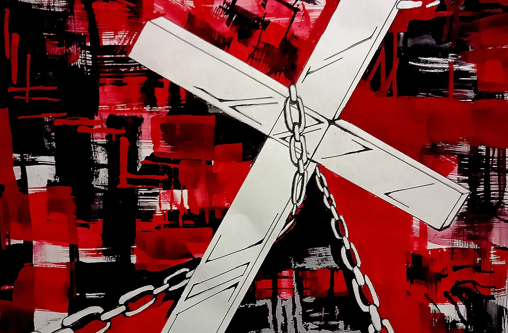
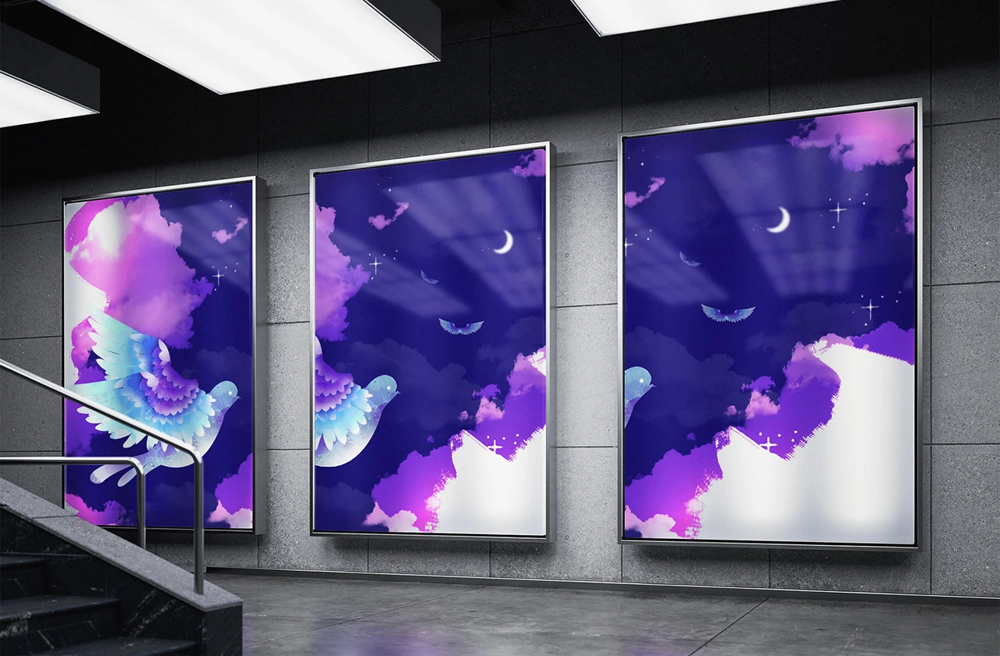
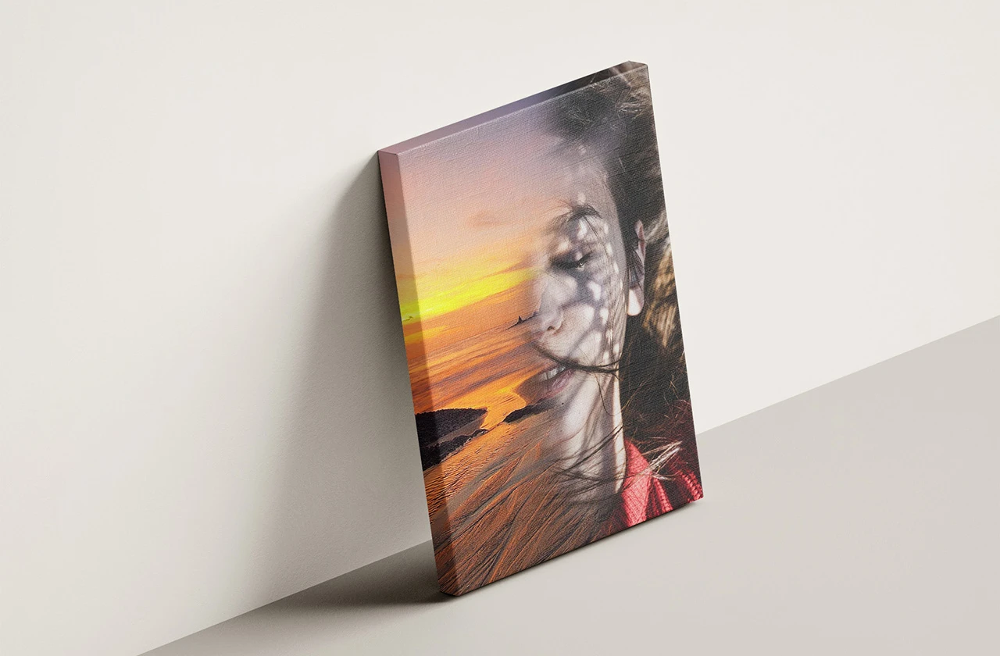

star_rate品牌介紹
艾達視覺工作室是一個以創意與美感為核心的個人品牌平台，結合視覺創作、平面設計與品牌設計服務，同時也是展示作品與提供接案合作的創意空間。工作室希望透過清晰而具有特色的視覺設計，讓每一個想法都能被看見、被理解，並以設計的力量傳達品牌價值。

spa獎項
在學生時期參加雲林縣高中美術比賽，作品以細膩的構圖與色彩表現，呈現對生活與藝術的觀察，最終獲得「優作」肯定。
這次比賽不僅累積了創作經驗，也讓我更理解美術與設計的表達力量，成為日後持續投入視覺創作與平面設計的重要起點。

star_half展覽
學生時期曾在斗六高中舉辦過一場雙人展，展出作品以水墨畫創作為主。第一次正式參與藝術展覽，從作品準備、佈展到公開展示，都是全新的體驗。透過這次展出，不僅累積了創作與展示的經驗，也讓更多人看見作品中的想法與情感，成為藝術創作旅程中重要的起點。
工作室作為個人作品展示平台，收錄多樣創作與設計成果，呈現創作者對藝術與生活的觀察與思考。每一件作品都代表一次探索。

filter_vintage未來願景
未來，我希望將接案經驗與創作能力融合，持續拓展平面設計、美術創作與數位媒體的專業領域。我希望幫助更多品牌與個人打造獨特形象，將創意與策略結合，創造具有影響力的作品。
透過個人作品與接案專案，累積多元經驗，探索更多跨領域合作可能性，將設計推向更完整的視覺表達層面。無論是品牌識別、廣告素材、包裝設計，還是藝術創作，我都希望每個作品都能傳遞故事、留下印象，成為觀者難忘的視覺體驗。